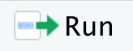

August 27, 2025
Transparency
Record of every step in data cleaning and analysis
Can easily reproduce all output
Access
Popularity
One of the most popular data science tools
Large online community of users
Ease of learning what comes next
http://r4stats.com/2019/07/15/is-scholarly-use-of-r-use-beating-spss-already/
Step 1: Install R
Download R for Linux / (Mac) OS X / Windows
Follow instructions under whatever link is appropriate for your computer
Step 2: Install RStudio
Download RStudio from https://posit.co/download/rstudio-desktop/
FREE Download
Choose appropriate installer for your computer
Be sure to update both R and RStudio periodically
For full functionality, you will also want to install a LaTeX distribution
tinytex installation within RStudio is the easiest option:
Tools -> Install Packages
Type tinytex under “Packages” and make sure “install dependencies” is checked
Click “Install”
On Windows, also need Rtools installed: https://cran.r-project.org/bin/windows/Rtools/
Alternatives for overachievers:
Windows: MikTeX https://miktex.org/download
Mac: MacTeX http://www.tug.org/mactex/
Select “Virtual Desktop”
May not have full RMarkdown functionality
https://mydesktop.fordham.edu/
Currently has an older version of RStudio
May not have full RMarkdown functionality
Online RStudio server: https://posit.cloud/
Try typing the following into your script document:
We want to send this command to the console
First, click on the line you want to run
Then, hit the run button 
Output appears in the console. What output do you expect?
Some things to know about R code:
2 + 3 and 2+3 are processed the same wayLine breaks don’t matter, so long as R doesn’t think you’re at the end of the command
Two equivalent ways to get help on specific functions within R:
Don’t be afraid to search for help online!
R help with practiceArithmetic Operators
| Operator | Description |
|---|---|
| + | addition |
| - | subtraction |
| * | multiplication |
| / | division |
| ^ | exponentiation |
Other Operators
| Operator | Description |
|---|---|
| <- | assignment |
| x:y | sequence from x to y |
| %>% | pipe operator (tidyverse) |
Logical (True/False) Operators
| Operator | Description |
|---|---|
| < | less than |
| <= | less than or equal to |
| > | greater than |
| >= | greater than or equal to |
| == | exactly equal to |
| != | not equal to |
| !x | not x |
| x | y | x OR y |
| x & y | x AND y |
Try out the following:
[1] TRUEOne of the most important operators is the assignment operator: <-
Assignment allows you to save an expression as an object in your environment.
Object name goes on the left-hand side
(can be anything beginning in a letter)
Expression to save goes on the right-hand side
Run the following code:
Notice that the object x now appears in your environment (upper right-hand panel). Now, you can refer to the value of x in further commands:
The high temperature in Manhattan on August 1, 2025 was 73\(^{\circ}\)F. Save this number as an object named aug1_F.
Convert the temperature in #1 to \(^{\circ}\)C by calling the aug1_F object. Save the output as aug1_C.
\[C = \frac{5}{9}(F-32)\]
aug1_C.One of the most important R functions is the c() function
Technically, “concatenate”
It might help to think of this as “collect” or “combine”
Creates a vector of information
Notice that the x object we defined earlier is now overwritten (and gone forever!) - BE CAREFUL never to overwrite anything important.
Most objects are one of the following types:
| Description | Object type | Appearance in Environment |
|---|---|---|
| vector of numbers | numeric | num[1:4] |
| vector of floating-point numbers | double | dbl[1:4] |
| vector of integers | integer | int[1:4] |
| vector of quoted text | character | chr[1:4] |
| vector of TRUE/FALSE | logical | logi[1:4] |
| vector of named factor levels | factor | fct[1:4] |
It’s also possible to have an object be a vector of length 1 (only one element)
| Structure | Appearance | Description |
|---|---|---|
| matrix | num[1:5,1:2] |
|
| data.frame | 5 obs. of 2 variables |
|
| tibble | 5 obs. of 2 variables |
|
| list | List of 5 |
|
We’ve already seen some functions in R
R functions take in some input and produce some output
Function inputs are called arguments and are separated by commas
For example:
Note: Capitalization matters! sum() is a command; Sum() is not
Many of the things we want to do in R can be done with built-in functions
Examples:
c()
mean()
sum()
See the base R cheat sheet to learn more:
Most functions have named arguments. The log (logarithm) function has two arguments, x and base:
The first argument is the number to take the logarithm of
The second argument is the base of the logarithm (defaults to the natural number \(e\))
Sometimes R’s built-in functions (base R) are not enough
Packages are collections of functions, data sets, etc. contributed by R users
Many packages are hosted on the comprehensive R archive network (CRAN): https://cran.r-project.org/web/packages/index.html
You can click on the “Packages” tab (lower right-hand panel) to see packages you have installed
Example: installing the tidyverse package:
First argument: "tidyverse" this is the name of the package
Second argument: dependencies = TRUE this will install other packages that tidyverse uses
You can also install packages by searching for packages under “Install” in the “Packages” tab (lower right-hand panel)
You only need to install packages once per machine, except after major software updates
However, you should update packages (as well as R and RStudio) regularly
If your R version is outdated, you may get a warning message
The library function loads in the package’s contents
R sessionThe above code loads in a number of packages for “tidy” evaluation, which we’ll use soon
The tidyverse contains many packages that follow the same philosophy and grammar of data analysis
RSome tidy packages:
ggplot2: plotting data
dplyr, tidyr: data cleaning & manipulation
haven, readr, readxl: import/export data
forcats: tools for handling categorical variables
I like to simply run library(tidyverse) to load in most of these packages
To read in data or to save output, you want to set your working directory
You can also set the working directory via point-and-click
Session \(\rightarrow\) Set Working Directory \(\rightarrow\) Choose Directory
But it’s better to put all commands into your final script (document everything)
On your computer, create a folder for today’s lab
From Blackboard, download the 4 files that begin with “mtcars” to that folder
In R, set your working directory to the folder that you just created
Run the command dir()
This will list the files in your current working directory
If all steps are done correctly, you should see the 4 “mtcars” files in that folder
The readr package (part of the tidyverse) can read in csv and similar files
Now, there should be an object in your environment named dat
dat?Tab-delimited:
Excel:
SPSS:
In R, there are (nearly always) multiple ways to do the same thing. These are the tidy methods of reading in data that I recommend, but there are other options out there. For example, you may like the rio package which has one import function that is supposed to work for all data types.
dat is a tibble (a tidy data frame)
# A tibble: 32 × 12
model mpg cyl disp hp drat wt qsec vs am gear carb
<chr> <dbl> <dbl> <dbl> <dbl> <dbl> <dbl> <dbl> <dbl> <dbl> <dbl> <dbl>
1 Mazda RX4 21 6 160 110 3.9 2.62 16.5 0 1 4 4
2 Mazda RX4 … 21 6 160 110 3.9 2.88 17.0 0 1 4 4
3 Datsun 710 22.8 4 108 93 3.85 2.32 18.6 1 1 4 1
4 Hornet 4 D… 21.4 6 258 110 3.08 3.22 19.4 1 0 3 1
5 Hornet Spo… 18.7 8 360 175 3.15 3.44 17.0 0 0 3 2
6 Valiant 18.1 6 225 105 2.76 3.46 20.2 1 0 3 1
7 Duster 360 14.3 8 360 245 3.21 3.57 15.8 0 0 3 4
8 Merc 240D 24.4 4 147. 62 3.69 3.19 20 1 0 4 2
9 Merc 230 22.8 4 141. 95 3.92 3.15 22.9 1 0 4 2
10 Merc 280 19.2 6 168. 123 3.92 3.44 18.3 1 0 4 4
# ℹ 22 more rowsglimpse is a “tidy” function that provides another brief summary of a data frame
Rows: 32
Columns: 12
$ model <chr> "Mazda RX4", "Mazda RX4 Wag", "Datsun 710", "Hornet 4 Drive", "H…
$ mpg <dbl> 21.0, 21.0, 22.8, 21.4, 18.7, 18.1, 14.3, 24.4, 22.8, 19.2, 17.8…
$ cyl <dbl> 6, 6, 4, 6, 8, 6, 8, 4, 4, 6, 6, 8, 8, 8, 8, 8, 8, 4, 4, 4, 4, 8…
$ disp <dbl> 160.0, 160.0, 108.0, 258.0, 360.0, 225.0, 360.0, 146.7, 140.8, 1…
$ hp <dbl> 110, 110, 93, 110, 175, 105, 245, 62, 95, 123, 123, 180, 180, 18…
$ drat <dbl> 3.90, 3.90, 3.85, 3.08, 3.15, 2.76, 3.21, 3.69, 3.92, 3.92, 3.92…
$ wt <dbl> 2.620, 2.875, 2.320, 3.215, 3.440, 3.460, 3.570, 3.190, 3.150, 3…
$ qsec <dbl> 16.46, 17.02, 18.61, 19.44, 17.02, 20.22, 15.84, 20.00, 22.90, 1…
$ vs <dbl> 0, 0, 1, 1, 0, 1, 0, 1, 1, 1, 1, 0, 0, 0, 0, 0, 0, 1, 1, 1, 1, 0…
$ am <dbl> 1, 1, 1, 0, 0, 0, 0, 0, 0, 0, 0, 0, 0, 0, 0, 0, 0, 1, 1, 1, 0, 0…
$ gear <dbl> 4, 4, 4, 3, 3, 3, 3, 4, 4, 4, 4, 3, 3, 3, 3, 3, 3, 4, 4, 4, 3, 3…
$ carb <dbl> 4, 4, 1, 1, 2, 1, 4, 2, 2, 4, 4, 3, 3, 3, 4, 4, 4, 1, 2, 1, 1, 2… model mpg cyl disp
Length:32 Min. :10.40 Min. :4.000 Min. : 71.1
Class :character 1st Qu.:15.43 1st Qu.:4.000 1st Qu.:120.8
Mode :character Median :19.20 Median :6.000 Median :196.3
Mean :20.09 Mean :6.188 Mean :230.7
3rd Qu.:22.80 3rd Qu.:8.000 3rd Qu.:326.0
Max. :33.90 Max. :8.000 Max. :472.0
hp drat wt qsec
Min. : 52.0 Min. :2.760 Min. :1.513 Min. :14.50
1st Qu.: 96.5 1st Qu.:3.080 1st Qu.:2.581 1st Qu.:16.89
Median :123.0 Median :3.695 Median :3.325 Median :17.71
Mean :146.7 Mean :3.597 Mean :3.217 Mean :17.85
3rd Qu.:180.0 3rd Qu.:3.920 3rd Qu.:3.610 3rd Qu.:18.90
Max. :335.0 Max. :4.930 Max. :5.424 Max. :22.90
vs am gear carb
Min. :0.0000 Min. :0.0000 Min. :3.000 Min. :1.000
1st Qu.:0.0000 1st Qu.:0.0000 1st Qu.:3.000 1st Qu.:2.000
Median :0.0000 Median :0.0000 Median :4.000 Median :2.000
Mean :0.4375 Mean :0.4062 Mean :3.688 Mean :2.812
3rd Qu.:1.0000 3rd Qu.:1.0000 3rd Qu.:4.000 3rd Qu.:4.000
Max. :1.0000 Max. :1.0000 Max. :5.000 Max. :8.000 For rectangular data structures (tibbles, data.frames, matrices), elements can be extracted using square brackets
# A tibble: 1 × 12
model mpg cyl disp hp drat wt qsec vs am gear carb
<chr> <dbl> <dbl> <dbl> <dbl> <dbl> <dbl> <dbl> <dbl> <dbl> <dbl> <dbl>
1 Mazda RX4 21 6 160 110 3.9 2.62 16.5 0 1 4 4Notice that there is often more than one way to do something in R
The following commands all extract the first column named “model”
Output of running any of the above methods:
Select some columns (tidy):
# A tibble: 32 × 3
model mpg cyl
<chr> <dbl> <dbl>
1 Mazda RX4 21 6
2 Mazda RX4 Wag 21 6
3 Datsun 710 22.8 4
4 Hornet 4 Drive 21.4 6
5 Hornet Sportabout 18.7 8
6 Valiant 18.1 6
7 Duster 360 14.3 8
8 Merc 240D 24.4 4
9 Merc 230 22.8 4
10 Merc 280 19.2 6
# ℹ 22 more rows%>% is the pipe operator (used with tibbles in the tidyverse)The :: notation means that the select function is part of the dplyr package
It can be useful to use this syntax when the command might conflict with a command from another package
In my experience, select is especially prone to conflicts
Filtering allows you to retain only those rows that meet a certain criterion
Below, I filter for cars that have more than 6 cylinders:
# A tibble: 14 × 12
model mpg cyl disp hp drat wt qsec vs am gear carb
<chr> <dbl> <dbl> <dbl> <dbl> <dbl> <dbl> <dbl> <dbl> <dbl> <dbl> <dbl>
1 Hornet Spo… 18.7 8 360 175 3.15 3.44 17.0 0 0 3 2
2 Duster 360 14.3 8 360 245 3.21 3.57 15.8 0 0 3 4
3 Merc 450SE 16.4 8 276. 180 3.07 4.07 17.4 0 0 3 3
4 Merc 450SL 17.3 8 276. 180 3.07 3.73 17.6 0 0 3 3
5 Merc 450SLC 15.2 8 276. 180 3.07 3.78 18 0 0 3 3
6 Cadillac F… 10.4 8 472 205 2.93 5.25 18.0 0 0 3 4
7 Lincoln Co… 10.4 8 460 215 3 5.42 17.8 0 0 3 4
8 Chrysler I… 14.7 8 440 230 3.23 5.34 17.4 0 0 3 4
9 Dodge Chal… 15.5 8 318 150 2.76 3.52 16.9 0 0 3 2
10 AMC Javelin 15.2 8 304 150 3.15 3.44 17.3 0 0 3 2
11 Camaro Z28 13.3 8 350 245 3.73 3.84 15.4 0 0 3 4
12 Pontiac Fi… 19.2 8 400 175 3.08 3.84 17.0 0 0 3 2
13 Ford Pante… 15.8 8 351 264 4.22 3.17 14.5 0 1 5 4
14 Maserati B… 15 8 301 335 3.54 3.57 14.6 0 1 5 8RStudio cheat sheets: https://posit.co/resources/cheatsheets/
More about tidy data: https://cran.r-project.org/web/packages/tidyr/vignettes/tidy-data.html
R bloggers:https://www.r-bloggers.com/
Posit Learn: https://education.rstudio.com/learn/
Learning Statistics with R textbook, chapters 3-8: https://learningstatisticswithr.com/book/part-ii-an-introduction-to-r.html
I lied to you
Instead of using plain “R Script” files (with a .R extension), in this class we will learn to use a markdown language
R Markdown is a well-established way to integrate word processing and R
Quarto is the next generation of R Markdown and will eventually replace R Markdown
Important
Use Quarto for this class if you can
File -> New File -> Quarto Document
Hit “Create” without changing any options
Save the document as a .qmd file to your Desktop
Hit the “Render” button.
If successful:
No error messages should display
On your Desktop, you should find an html file with the same name